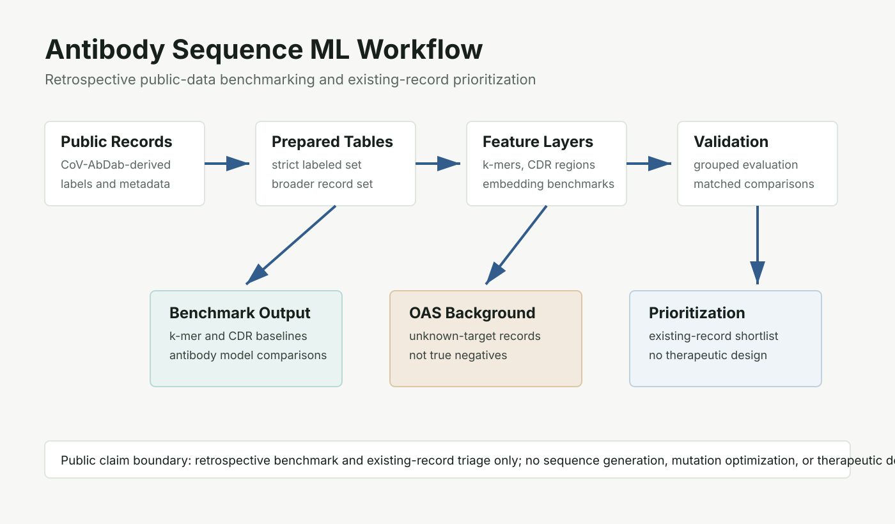
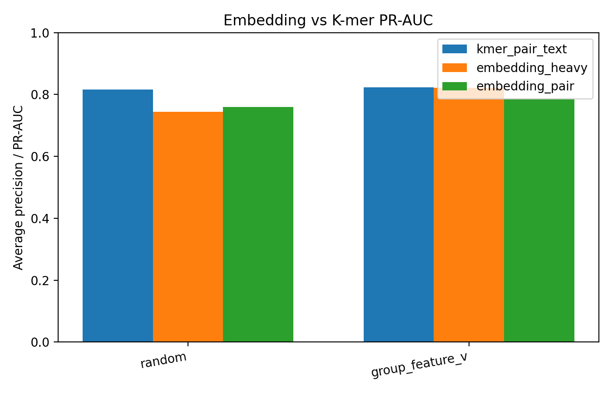
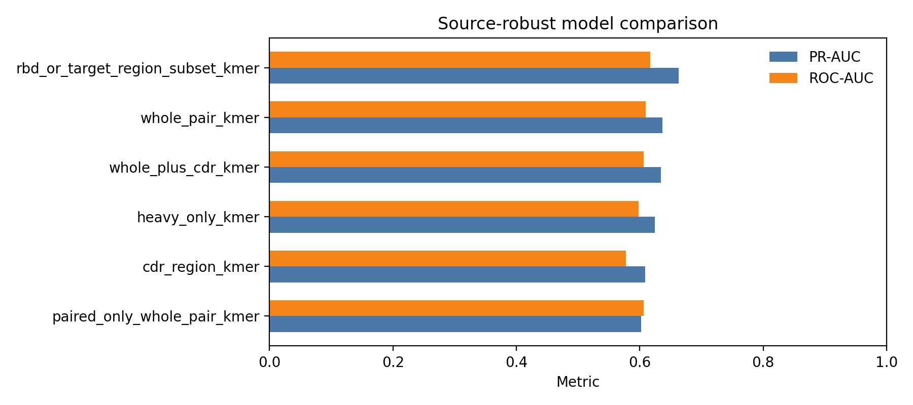
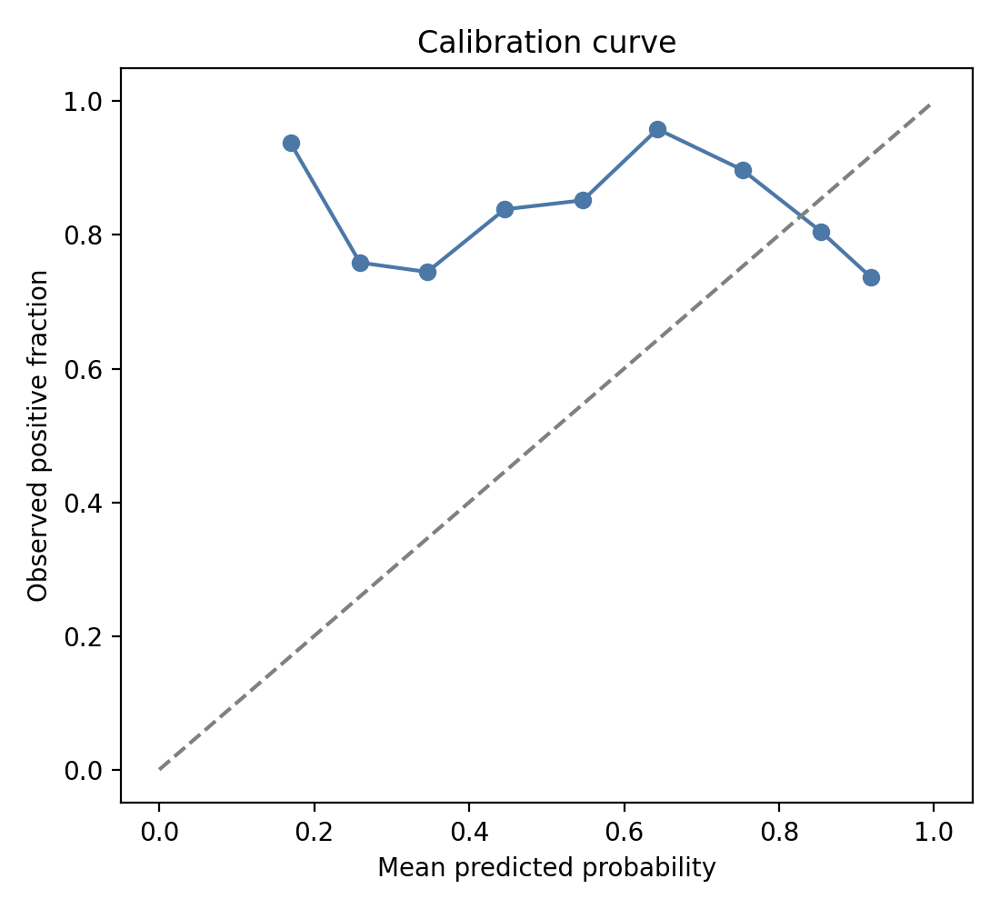
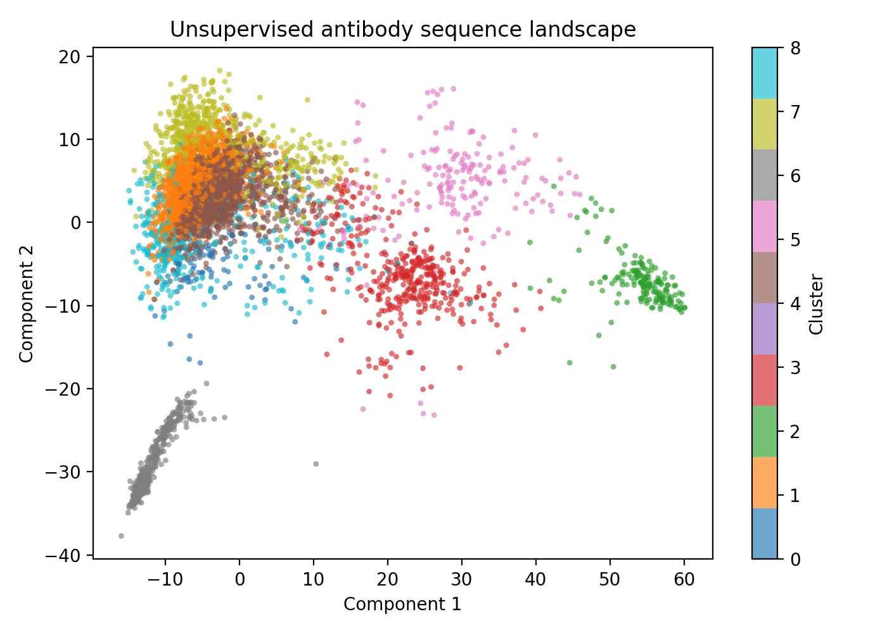

Biologics
Antibody sequence ML
Public antibody sequence-record workflow with supervised neutralisation benchmarking, unsupervised sequence-space analysis, source-holdout validation, and existing-record prioritization.
At a glance
Data
The workflow uses public CoV-AbDab-derived records, a strict labeled subset, a broader prepared-record table, and an annotated paired subset for CDR/region analysis.
Methods
Character k-mer TF-IDF baselines, logistic regression, CDR/region features, antibody representation benchmarks, unsupervised cached-embedding landscape analysis, calibration analysis, OAS background retrieval, and diversity-aware existing-record ranking.
Validation
| Output | Result |
|---|---|
| Broad scorer | whole-pair k-mer TF-IDF logistic regression |
| Grouped validation | ROC-AUC 0.7800, PR-AUC 0.8233 |
| Source-robust weighted holdout | ROC-AUC 0.6095, PR-AUC 0.6363 |
| Unsupervised landscape | KMeans over cached pair embeddings; 9 clusters; labels overlaid after clustering |
| Paired-region scorer | region-only compact k-mer |
| Existing-record shortlist | 23 records |
Figures





Scope
Scope: retrospective public-record workflow with grouped validation, source-holdout analysis, unsupervised representation analysis, and existing-record ranking. It does not design, generate, or optimize new antibody sequences.
Reproducibility
The standalone repository includes reports, metrics, figures, model and data cards, and lightweight checks.
make reproduce-small
make testTechnical focus
Sequence-feature engineering, unsupervised embedding-space analysis, grouped validation, source effects, calibration, and record-prioritization workflow design.